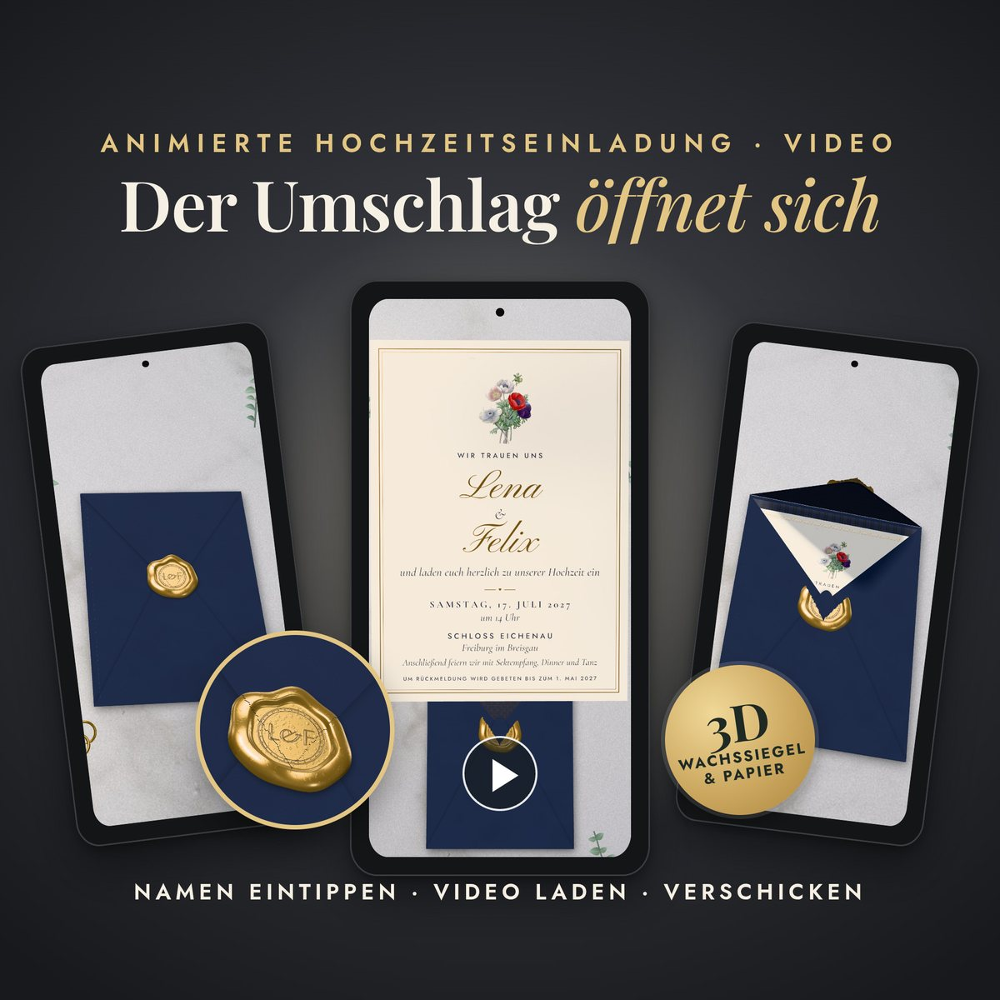
← all 20 listings · Animated Wedding Invitations
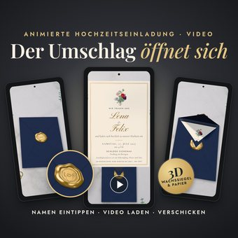
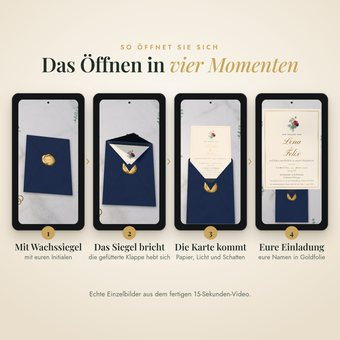
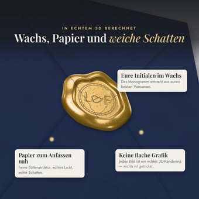
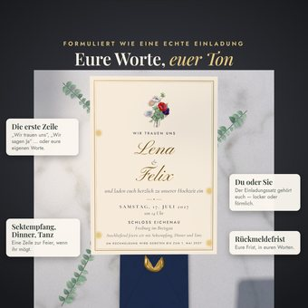
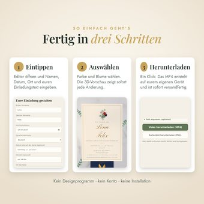
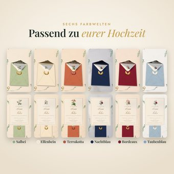
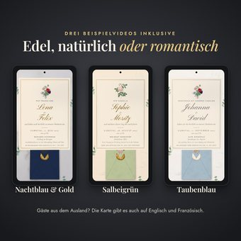
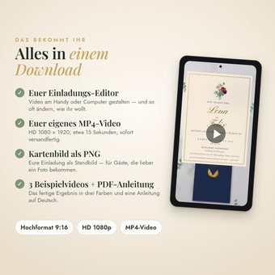
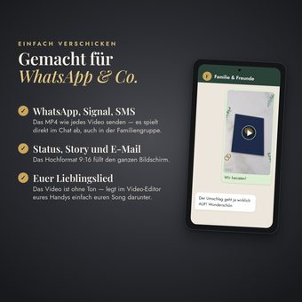
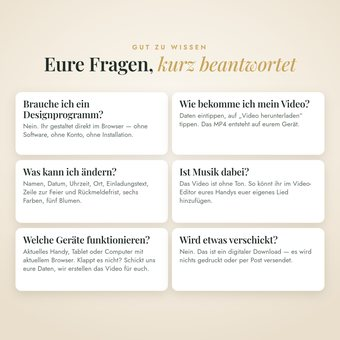
▶ video
Animierte Hochzeitseinladung als Video: drei Handys zeigen den nachtblauen 3D-Umschlag mit goldenem Wachssiegel, das Öffnen und die fertige Einladung von Lena und Felix.
TheCoolShopCo
Hochzeitseinladung digital als Video, animierte Hochzeitseinladung mit 3D-Umschlag und Wachssiegel, Einladung zum Selbstgestalten fürs Handy
$19.99
Digital download — 6 file(s) · Designed by TheCoolShopCo
Try the invitation maker (live) ↗Buy it nowAdd to basket
Files you get
- Anleitung „Hier starten“ (2 pages, German): open the editor, make the video, send it by WhatsApp; help route (Hier-starten-Hochzeitseinladung-Video.pdf)
- Offline copy of the invitation editor (one self-contained HTML file, German UI + read-me). Opens in a browser on a computer. (hochzeitseinladung-video-editor.zip)
- Sample video, German wording, Midnight Navy — Lena & Felix (1080x1920, 15 s) (beispiel-hochzeitseinladung-nachtblau.mp4)
- Sample video, German wording, Sage — Sophie & Moritz (1080x1920, 15 s) (beispiel-hochzeitseinladung-salbei.mp4)
- Sample video, German wording (formal Sie), Dusty Blue — Johanna & David (1080x1920, 15 s) (beispiel-hochzeitseinladung-taubenblau.mp4)
- The editor itself — host this file (any static host), put its URL in _kit/wedding/kit.config.json ("w09"), rebuild the PDF. Not uploaded to Etsy as-is. (index.html)
Eine digitale Hochzeitseinladung als Video, die eure Gäste garantiert zweimal ansehen: ein echter 3D-Umschlag, versiegelt mit euren Initialen im Wachs. Das Siegel bricht, die gefütterte Klappe hebt sich und eure Einladung gleitet heraus — direkt auf den Handybildschirm.
Diese animierte Hochzeitseinladung verschickt ihr ganz einfach per WhatsApp, in der Familiengruppe oder als Status. Jedes Bild ist ein echtes 3D-Rendering: Papierstruktur, Licht, weiche Schatten und eure Namen in Goldfolie.
DAS BEKOMMT IHR
• Euren Einladungs-Editor: eine private Webseite (plus Offline-Kopie als ZIP-Datei), auf der ihr eure Daten eintippt und euer Video herunterladet
• Euer persönliches MP4-Video: Hochformat 9:16, HD 1080 × 1920, ca. 15 Sekunden, ohne Wasserzeichen
• Das Bild eurer Karte (PNG) für Gäste, die lieber ein Foto bekommen
• 3 fertige Beispielvideos auf Deutsch: Nachtblau & Gold, Salbeigrün, Taubenblau
• Die Anleitung „Hier starten“ (PDF, auf Deutsch)
DAS BESONDERE
• Umschlag, Wachssiegel, Futter und Karte in echtem 3D mit echtem Licht und Schatten
• Eure Initialen im Wachssiegel — automatisch aus euren beiden Vornamen
• Alle Angaben änderbar: Namen, Datum, Uhrzeit, Ort, Stadt, Rückmeldefrist
• Auch der Einladungstext gehört euch: die Zeile über den Namen („Wir trauen uns“, „Wir sagen Ja“ …), der Einladungssatz und die Zeile zur Feier (Sektempfang, Abendessen, Tanz) — in Du- oder Sie-Form
• Das Datum schreibt sich von selbst aus: „Samstag, 17. Juli 2027“
• 6 Farbwelten: Nachtblau, Salbeigrün, Taubenblau, Terrakotta, Bordeaux, Elfenbein & Champagner
• 5 historische botanische Blumen oder ein schlichtes Monogramm ohne Blume
• Karte auch auf Englisch und Französisch — praktisch für Gäste aus dem Ausland
• So viele Versionen, wie ihr möchtet: eine für die Familie, eine für Freunde, eine nur für die Abendgäste
• Kein Designprogramm, kein Konto, keine Installation
SO GEHT’S (3 SCHRITTE)
1. Öffnet euren Einladungs-Editor über die Anleitung „Hier starten“.
2. Namen, Datum und Ort eintippen, Farbe und Blume wählen — die 3D-Vorschau zeigt jede Änderung sofort.
3. Auf „Video herunterladen“ tippen. Das MP4 entsteht direkt auf eurem eigenen Gerät und ist sofort versandfertig.
FUNKTIONIERT MIT
• Zum Gestalten: aktuelles Handy, Tablet oder Computer mit aktuellem Browser (Chrome oder Edge empfohlen)
• Zum Verschicken: Das MP4 läuft auf jedem Handy — per WhatsApp, Signal, SMS, E-Mail oder als Status bzw. Story
• Lieber machen lassen? Schickt uns eure Daten per Etsy-Nachricht. Wir erstellen euer Video und senden es euch innerhalb von 24 Stunden.
HÄUFIGE FRAGEN
Ist Musik dabei? — Das Video ist ohne Ton. So könnt ihr im Video-Editor eures Handys euer eigenes Lied darunterlegen, bevor ihr es verschickt.
Bleibt das Video in WhatsApp scharf? — WhatsApp verkleinert Videos beim Senden etwas. Tippt vor dem Abschicken oben auf „HD“, dann bleibt die Qualität am besten erhalten.
Kann ich meinen eigenen Text schreiben? — Ja, jede Zeile der Karte lässt sich ändern. Die Zeilen sind kurz (jeweils eine Zeile) — es ist eine Einladungskarte, kein Brief.
Kann ich Layout oder Schrift ändern oder ein Foto einfügen? — Nein. Layout und Schriften gehören zum Design. Ihr bestimmt Worte, Farben und Blume.
Kann ich die Einladung drucken? — Dieses Produkt ist eine Video-Einladung. Das mitgelieferte PNG-Kartenbild ist für Bildschirme gedacht.
Werden meine Daten hochgeladen? — Nein. Das Video entsteht in eurem eigenen Browser; eure Namen und Angaben verlassen euer Gerät nicht.
Wie lang ist das Video? — Etwa 15 Sekunden: rund 8 Sekunden Öffnen, danach bleibt die Einladung zum Lesen stehen (Pausieren geht natürlich auch).
LIEFERUNG
Sofortiger digitaler Download — es wird nichts per Post verschickt. Nach der Zahlung findet ihr eure Dateien unter „Käufe und Bewertungen“ bei Etsy (und per E-Mail): die PDF-Anleitung, den Einladungs-Editor (ZIP) und die Beispielvideos. Farben können je nach Bildschirm leicht abweichen. Da die Dateien sofort geliefert werden, sind digitale Artikel vom Umtausch ausgeschlossen. Sollte bei euch etwas nicht funktionieren, schreibt uns bitte — wir finden eine Lösung.
Gestaltet von TheCoolShopCo. Einige Designelemente wurden mithilfe von KI-Tools erstellt und von Hand fertiggestellt.
Tags (13)
Title 140/140 chars · main keyword: hochzeitseinladung digital · materials: MP4-Video, Editor im Browser, PNG, PDF
EN translation (shown to en shoppers)
German Wedding Invitation Video, Hochzeitseinladung Digital, Animated 3D Envelope Opening with Wax Seal, Editable Invite in German
An animated German wedding invitation (Hochzeitseinladung) on video: a real 3D envelope sealed with your initials in wax. The seal snaps, the lined flap lifts and your invitation slides out and rises to the screen.
The card is worded the way Germans really invite — "Wir trauen uns", "und laden euch herzlich zu unserer Hochzeit ein", "Um Rückmeldung wird gebeten bis…" — and the finished MP4 is made to be sent by WhatsApp. Every frame is a true 3D render.
WHAT YOU GET
• Your invitation maker — a private web page (plus an offline copy in a ZIP) where you type your details and download your video
• Your own MP4 video: vertical 9:16, HD 1080 × 1920, about 15 seconds, no watermark
• A matching picture of your card (PNG)
• 3 finished sample videos in German: midnight navy & gold, sage green, dusty blue
• A Start Here guide (PDF, in German)
FEATURES
• Real 3D envelope, wax seal, liner and card with real lighting and shadows
• Your initials in the wax, made automatically from your two first names
• Every line can be changed: names, date, time, venue, town, reply-by line, the line above the names, the invitation sentence and the reception line — informal "ihr" or formal "Sie"
• The date is written out for you in German ("Samstag, 17. Juli 2027")
• 6 colourways, 5 vintage botanical flowers (or a clean monogram)
• The card also comes in English and French for guests abroad — the maker's menus follow the language you pick
• No design app, no account, nothing to install
HOW IT WORKS (3 STEPS)
1. Open your invitation maker from the Start Here guide.
2. Type your names, date and venue, pick a colour and a flower and watch the 3D preview update.
3. Press "Video herunterladen" (Download video). The MP4 is made on your own device, ready to send.
WORKS WITH
• A recent phone, tablet or computer with an up-to-date web browser (Chrome or Edge recommended)
• The finished MP4 plays on every phone and can be sent by WhatsApp, Signal, text, email or posted as a status or story
• Rather not do it yourself? Send us your details in an Etsy message and we will make the video for you within 24 hours.
FAQ
Is there music? — The video is silent, so you can add any song in your phone's video editor.
Can I change the layout, fonts or add a photo? — No. You change the words, the colours and the flower; the layout is part of the design.
Is my information uploaded anywhere? — No. The video is made inside your own browser.
DELIVERY
Instant digital download. Nothing is shipped. After payment your files are in Purchases and reviews on Etsy. Colours can look slightly different from screen to screen. If anything does not work for you, message us and we will put it right.
Designed by TheCoolShopCo. Some design elements were created with the help of AI tools and finished by hand.
FR translation (shown to French shoppers)
Faire-part de mariage en allemand, vidéo animée, enveloppe 3D qui s’ouvre avec cachet de cire, invitation mariage digitale à personnaliser
Un faire-part de mariage animé en allemand (Hochzeitseinladung), en vidéo : une vraie enveloppe en 3D, fermée par un cachet de cire à vos initiales. Le cachet se brise, le rabat doublé se soulève et votre faire-part glisse hors de l’enveloppe jusqu’à l’écran.
La carte est rédigée comme on invite vraiment en Allemagne — « Wir trauen uns », « und laden euch herzlich zu unserer Hochzeit ein », « Um Rückmeldung wird gebeten bis… » — et chaque image est un véritable rendu 3D.
CE QUE VOUS RECEVEZ
• Votre créateur de faire-part : une page web privée (et sa copie hors ligne dans un ZIP) où vous saisissez vos informations et téléchargez votre vidéo
• Votre vidéo MP4 : format vertical 9:16, HD 1080 × 1920, environ 15 secondes, sans filigrane
• L’image de votre carte (PNG)
• 3 vidéos d’exemple en allemand : bleu nuit & or, vert sauge, bleu poudré
• Le guide « Hier starten » (PDF, en allemand)
LES PLUS
• Enveloppe, cachet de cire, doublure et carte en vraie 3D, avec de vraies ombres
• Vos initiales dans la cire, créées automatiquement à partir de vos prénoms
• Chaque ligne se modifie : prénoms, date, heure, lieu, ville, réponse souhaitée, ligne au-dessus des prénoms, phrase d’invitation, ligne réception — tutoiement ou vouvoiement
• La date s’écrit toute seule en allemand (« Samstag, 17. Juli 2027 »)
• 6 harmonies de couleurs, 5 fleurs botaniques anciennes (ou un monogramme)
• Carte disponible aussi en français et en anglais — les menus du créateur suivent la langue choisie
• Aucun logiciel de création, aucun compte, rien à installer
COMMENT ÇA MARCHE (3 ÉTAPES)
1. Ouvrez votre créateur de faire-part depuis le guide.
2. Saisissez vos prénoms, la date et le lieu, choisissez une couleur et une fleur : l’aperçu 3D se met à jour.
3. Appuyez sur « Video herunterladen » (Télécharger la vidéo). Le MP4 est créé sur votre propre appareil.
COMPATIBILITÉ
• Téléphone, tablette ou ordinateur récent avec un navigateur à jour (Chrome ou Edge recommandés)
• La vidéo MP4 se lit sur tous les téléphones et s’envoie par WhatsApp, SMS, e-mail ou en story
• Vous préférez qu’on s’en occupe ? Envoyez-nous vos informations par message Etsy : nous créons la vidéo sous 24 heures.
QUESTIONS FRÉQUENTES
Y a-t-il de la musique ? — La vidéo est muette : ajoutez la chanson de votre choix dans l’éditeur vidéo de votre téléphone.
Puis-je changer la mise en page ou ajouter une photo ? — Non. Vous choisissez les mots, les couleurs et la fleur ; la mise en page fait partie du modèle.
Mes informations sont-elles envoyées quelque part ? — Non. La vidéo est fabriquée dans votre navigateur.
LIVRAISON
Téléchargement numérique immédiat : rien n’est expédié. Après le paiement, vos fichiers sont disponibles dans vos achats Etsy. Les couleurs peuvent varier légèrement d’un écran à l’autre. Un souci ? Écrivez-nous, nous trouverons une solution.
Conçu par TheCoolShopCo. Certains éléments graphiques ont été créés à l’aide d’outils d’IA puis finalisés à la main.
Honest verdict (round 1): 8/10
8Thumbnail
8Gallery
7Product
8Title+tags+text
9In search grid
German listing (charcoal/navy, 'Der Umschlag öffnet sich'). Same real 3D envelope, all German text. Dark tile stands out in a grid of light floral cards.
Still holding it back: Invitation maker not hosted or phone-tested yet; German copy not native-proofread; must post English-primary with German as the translation.
In Etsy search for “hochzeitseinladung digital” (422 results) — can you spot ours?
Ours is placed at position 3 among the real top results (sort = relevance).

Navy blue RSVP Website wedding template ,Countdown Timer , Editable Canva Invitation, Envelope Reveal, Hochzeitseinladung| digital download
25.00 USD
Etsy result #1

Burgundy and olive Digital Wedding invitation with music and Envelope opening Elegant Wedding Invite Video Hochzeitseinladung digital
18.11 EUR
Etsy result #2
Hochzeitseinladung digital als Video, animierte Hochzeitseinladung mit 3D-Umschlag und Wachssiegel, Einladung zum Selbstgestalten fürs Handy
$19.99
TheCoolShopCo · Digital download

Invitation Wedding Elegant Watercolor Card, Invitaciones de Boda Digital, Invitacion de Boda Editable, Hochzeitseinladung, Digital Download
3.00 USD
Etsy result #3

Hochzeitseinladung Digital WhatsApp Smartphone Einladungsvorlage Canva Vorlage Editierbar Sofort Download
4.99 EUR
Etsy result #4

Text message digital invite Txt msg invite Bach evite Bachelorette Weekend Itinerary Template | Digital Invitation & Planner
4.95 AUD
Etsy result #5

Digital Wedding Invitation, Easy to Edit Electronic Wedding Invitation Digital Wedding Invite Template, Hochzeitseinladung
14.99 CAD
Etsy result #6

Hochzeitseinladung Video digital – animierte Einladung Hochzeit für WhatsApp, personalisiert pro Gast, mit RSVP & QR-Code
12.59 EUR
Etsy result #7

Gatefold Wedding Invitation, German Digital Canva Editable Template, Minimalistisch Hochzeit Einladung, Hochzeitseinladung Hochzeitskarte
200.00 TRY
Etsy result #8

Wedding Invitation – Elegant Royal Blue Video Invite – Editable Canva Template with Photo, RSVP & Program – Digital Hochzeitseinladung evite
10.99 CAD
Etsy result #9

Hochzeitseinladung Printable Einladung Hochzeit Editable Faire Part Mariage Digital Davetiye Einladungskarten Hochzeit Instant Download
5.99 USD
Etsy result #10

German Wedding Invitation Template – RSVP Tracking – Editable Canva Digital Hochzeitseinladung Deutsch
22.50 EUR
Etsy result #11